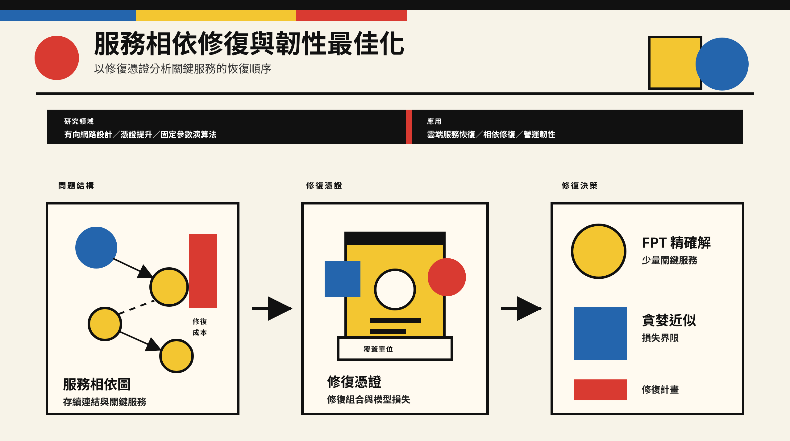
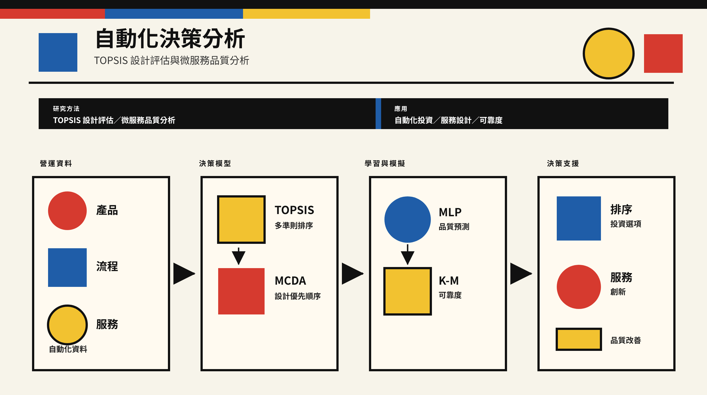

技術與產品管理
半導體、通訊工程、物聯網與技術產品開發，關注技術投資、產品路線與執行之間的關係。
ABOUT
產業現場的問題，
也是研究與教學的起點。
我的工作橫跨半導體與通訊工程、產品與專案管理，以及統計計算、數學建模與作業研究。目前任職於聯發科技，同時於國立臺北大學兼任教學。
在產業端，我參與技術規劃、跨部門協作與產品執行；在研究與課堂上，則將問題整理成可以分析、比較與驗證的模型。兩種工作經驗，讓我更重視方法在實際情境中是否有用。
半導體、通訊工程、物聯網與技術產品開發，關注技術投資、產品路線與執行之間的關係。
運用統計計算、預測模型與系統模擬，分析營運資料，辨識風險與改善機會。
在跨部門合作中協調進度、品質與資源，讓技術規劃能夠落實為產品與交付成果。
透過多準則決策與最佳化方法比較方案，也將分析思考帶進商業與管理課程。
EXPERIENCE & EDUCATION
2023 — 至今
資深專案／技術經理
技術規劃、跨部門協作與產品執行。
2024 — 至今
兼任助理教授
資料分析與行銷管理相關課程。
2019 — 2023
系統工程師／工程專案經理
系統開發、工程協作與產品交付。
2017
資料分析師／約聘人員
資料分析與國際產業專案經驗。
RESEARCH
研究企業如何在技術、營運與資源限制下，做出可解釋、可驗證的決策。主要方法包括多準則決策、系統模擬、最佳化與機器學習。
服務恢復・韌性最佳化
服務中斷後，應該先修復哪些相依關係？這項研究將存續連結、失效依賴與個別修復成本，整理成有向服務圖，再透過修復憑證分析行動之間的互補關係與覆蓋損失。
以精確與近似方法尋找修復組合，支援關鍵服務恢復、雲端系統修復與營運韌性規劃。

自動化・設計評估・服務品質
結合兩項研究：以 TOPSIS 比較產品與流程設計，以及透過資料建模、多層感知器（MLP）與 Kaplan–Meier 可靠度分析，評估微服務品質。
將產品、流程與服務資料整理成可比較的方案，支援自動化投資、服務架構選擇與品質改善。

SELECTED PUBLICATIONS
以下列出四篇具 DOI 的代表著作。中文為導讀標題，正式英文題名與出版資訊可由 DOI 連結查閱。
A Reliability-Aware Digital Twin Reference Architecture for Industry 5.0 Microservice-Based Smart Manufacturing Systems
IEEE AIC 2026 · Yen-Chun Wen
Smart Manufacturing Service System Innovation and Expansion through AI Simulation Modeling Application Assessment - System Reliability Analysis Based Design and Development
國立臺灣大學博士論文 · Yen-Chun Wen
Product and Process Design Through TOPSIS System Analysis Under Industry 4.0 Platform Application
IEEE iSemantic 2022 · Yen-Chun Wen、Wun-Hwa Chen
Service Innovation and Quality Assessment of Industry 4.0 Microservice through Data Modeling and System Simulation Evaluation Approaches
Applied Sciences · Yen-Chun Wen、Wun-Hwa Chen
TEACHING
以商業與管理問題為起點，結合觀念、案例分析與專題實作。
資料分析與 AI 應用
培養以資料分析解決管理問題的能力。課程包含機器學習、迴歸與分類、分群、預測，以及強化學習應用。
決策樹與顧客區隔、迴歸與 Logit 模型、支援向量機、過度配適與模型複雜度、RFM 分析、時間序列預測。
期中考 30%・案例報告 30%
課堂參與 10%・個人簡報 30%
行銷與服務策略
從企業策略出發，理解消費者、市場與競爭環境，討論品牌、服務、定價及通路的管理選擇。
消費者行為、競爭分析、市場區隔與定位、行銷研究、行銷溝通、服務行銷、品牌管理、定價與通路策略。
期末考 30%・案例報告 30%
課堂參與 10%・小組簡報 30%
CONTACT
歡迎就技術管理、資料分析、決策研究與教學交流聯繫。